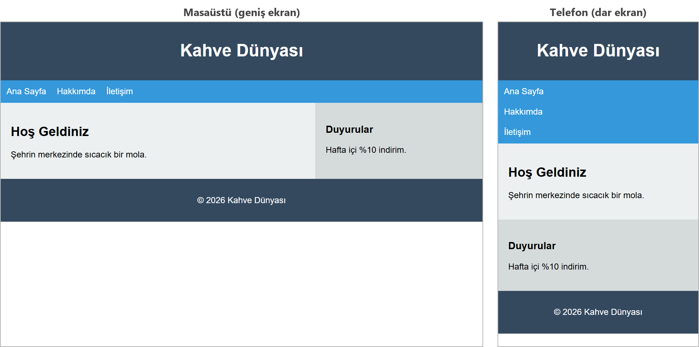
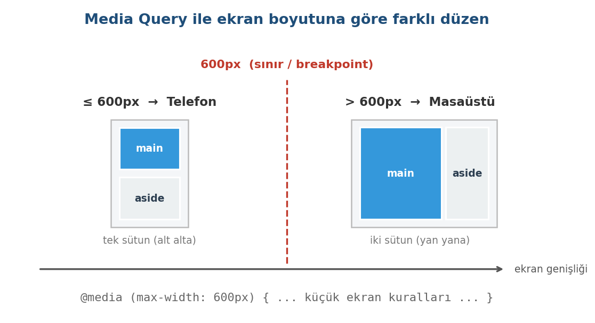

Responsive (Duyarlı) Tasarım
Bu sayfada
Web sitelerine yalnızca bilgisayardan değil, telefondan da giriliyor. Masaüstünde güzel görünen bir sayfa, telefonda okunamayacak kadar küçük veya bozuk görünebilir. Responsive (duyarlı) tasarım, aynı sayfanın ekran boyutuna göre kendini yeniden düzenlemesi demektir.

Görüldüğü gibi masaüstünde yan yana duran main ve aside, telefonda alt alta gelir. Bunu sağlayan iki araç, viewport etiketi ve media query kuralıdır.
1Viewport Meta Etiketi
Responsive tasarımın ilk şartı budur. <head> içine şu satır eklenir:
<meta name="viewport" content="width=device-width, initial-scale=1.0">
width=device-width→ sayfanın genişliğini cihazın gerçek genişliği kadar ayarlar.initial-scale=1.0→ sayfa açıldığında yakınlaştırmayı 1 kat (normal) tutar.
Bu etiket olmadan mobil tarayıcılar sayfayı yaklaşık 980 piksel genişliğinde çizip küçültür; sonuçta yazılar minicik ve okunmaz görünür. Bu nedenle her responsive sayfanın <head>'inde bu satır bulunmalıdır.
2Media Query (Ortam Sorgusu)
Media query ile tarayıcıya "ekran belirli bir genişlikteyse şu CSS kurallarını uygula" deriz. Düzenin değiştiği bu genişlik sınırına breakpoint (kırılma noktası) denir.

/* Ekran genişliği 600px veya daha az ise (telefon) */
@media (max-width: 600px) {
.govde {
flex-direction: column; /* sütunları alt alta al */
}
}
@media (max-width: 600px)→ "ekran en fazla 600px genişlikteyse" anlamına gelir. Bu, telefon gibi dar ekranlar demektir.- Süslü parantezlerin içine, o durumda geçerli olacak normal CSS kuralları yazılır.
- Bu derste tek bir kırılma noktası kullanıyoruz: 600px. Ekran 600px veya daha darsa telefon düzeni, daha genişse bilgisayar düzeni geçerli olur.
3Mobil Öncelik (Mobile-First) Mantığı
Modern web tasarımında sayfalar genellikle önce telefon için tasarlanır, sonra büyük ekranlar için ayrıntı eklenir. Buna mobil öncelik denir. Mantığı basittir: en küçük ekranda çalışan sade bir düzen her yerde çalışır; büyük ekranlar için ise fazladan sütun ve boşluk eklenir.
Bu derste, kavramı daha kolay görmek için tersini kullanacağız: masaüstü düzenini varsayılan yapıp, telefon için max-width media query ile değiştireceğiz. İkisi de geçerli bir yöntemdir; önemli olan sayfanın her ekranda düzgün görünmesidir.
4Örnek: Site İskeletini Responsive Yapma
Şimdi 11. haftada, Flexbox 2 ve Sayfa Yerleşimi konusunda yaptığımız site iskeletini alıp telefonda düzgün görünecek hâle getirelim. İki şey ekliyoruz: <head>'e viewport etiketi ve CSS'in sonuna bir media query (telefonda sütunları alt alta almak için).
<!DOCTYPE html>
<html lang="tr">
<head>
<meta charset="utf-8">
<meta name="viewport" content="width=device-width, initial-scale=1.0">
<title>Responsive Site</title>
<style>
body { margin: 0; font-family: Arial, sans-serif; }
header, footer {
background-color: #34495e;
color: white;
padding: 15px;
text-align: center;
}
nav {
display: flex;
gap: 20px;
background-color: #3498db;
padding: 12px;
}
nav a { color: white; text-decoration: none; }
.govde { display: flex; }
main { flex: 2; background-color: #ecf0f1; padding: 20px; }
aside { flex: 1; background-color: #d5dbdb; padding: 20px; }
/* Telefon: ekran 600px veya daha darsa */
@media (max-width: 600px) {
.govde { flex-direction: column; } /* sütunlar alt alta */
nav { flex-direction: column; } /* menü alt alta */
}
</style>
</head>
<body>
<header><h1>Kahve Dünyası</h1></header>
<nav>
<a href="#">Ana Sayfa</a>
<a href="#">Hakkımda</a>
<a href="#">İletişim</a>
</nav>
<div class="govde">
<main>
<h2>Hoş Geldiniz</h2>
<p>Şehrin merkezinde sıcacık bir mola.</p>
</main>
<aside>
<h3>Duyurular</h3>
<p>Hafta içi %10 indirim.</p>
</aside>
</div>
<footer><p>© 2026 Kahve Dünyası</p></footer>
</body>
</html>
Geniş ekranda main ve aside yan yana durur. Ekranı daralttığınızda (veya sayfayı telefonda açtığınızda) genişlik 600px veya altına inince .govde öğelerini tek sütunda dizer ve iki bölüm alt alta gelir. Aynı şey menü için de olur.
Nasıl Test Edilir?
Telefonunuz olmadan da test edebilirsiniz: sayfayı tarayıcıda görüntülerken F12 ile Geliştirici Araçları'nı açın ve üstteki cihaz simülasyonu (telefon ve tablet) simgesine tıklayın. Farklı cihaz boyutlarını seçerek sayfanın nasıl değiştiğini görebilirsiniz. Tarayıcı penceresini fareyle daraltarak da düzenin değiştiğini görebilirsiniz.
5Sıkça Yapılan 5 Hata
| Hata | Sonuç | Çözüm |
|---|---|---|
| Viewport meta etiketini eklememek | Sayfa telefonda küçük ve okunmaz görünür | <head>'e viewport etiketini ekleyin |
Media query'yi <style> dışına yazmak | Kural çalışmaz; kod sayfada yazı olarak görünür | @media kuralını <style> etiketinin içine yazın |
@media'nin süslü parantezlerini kapatmamak | Sonra yazılan kurallar da yalnızca dar ekranda uygulanır | İç içe { } parantezleri doğru kapatın |
Breakpoint'te birimi (px) unutmak | Bloktaki kurallar hiç uygulanmaz | max-width: 600px biçiminde yazın |
| Yalnızca kodu yazıp test etmemek | Telefonda bozukluk fark edilmez | F12 cihaz simülasyonuyla mutlaka test edin |
6Bu Haftanın Özeti
- Responsive tasarım, aynı sayfanın ekran boyutuna göre kendini yeniden düzenlemesidir (telefon ve bilgisayar).
- Viewport meta etiketi (
width=device-width, initial-scale=1.0) responsive tasarımın ilk şartıdır; bu etiket olmadan mobilde sayfa küçük görünür. - Media query (
@media (max-width: 600px) { ... }) belirli bir ekran genişliğinde farklı CSS uygular; sınıra breakpoint denir. - Telefonda menü, sütunlar ve kartlar alt alta alınır:
flex-direction: column. - Mobil öncelik, önce küçük ekran için tasarlayıp büyük ekranlar için ayrıntı eklemektir; bu derste
max-widthile masaüstünden telefona uyarladık. - Responsive bir sayfa her zaman
F12cihaz simülasyonu ile test edilmelidir.
7Konu Sonu Testi
-
Bir sayfanın telefonda düzgün ölçeklenmesi için
<head>'e hangi etiket eklenir?- a)
<title> - b) viewport
<meta>etiketi - c)
<link> - d)
<nav>
Cevabı göster
bViewport meta etiketi responsive tasarımın ilk şartıdır. - a)
-
@media (max-width: 600px)ne anlama gelir?- a) Ekran en az 600px ise
- b) Ekran en fazla 600px (600px veya daha dar) ise
- c) Yazı 600px olsun
- d) Sayfa 600px'e ortalansın
Cevabı göster
bmax-width: 600px, ekran 600px veya daha dar olduğunda geçerlidir. -
Telefonda yan yana iki sütunu alt alta almak için
flex-directionne yapılır?- a)
row - b)
column - c)
center - d)
wrap
Cevabı göster
bflex-direction: columnsütunları alt alta alır. - a)
-
Viewport içeriğindeki
width=device-widthne sağlar?- a) Sayfa genişliğini cihazın genişliği kadar yapar
- b) Yazı boyutunu ayarlar
- c) Rengi değiştirir
- d) Sayfayı ortalar
Cevabı göster
awidth=device-widthsayfa genişliğini cihaz genişliğine eşitler. -
Düzenin değiştiği ekran genişliği noktasına ne denir?
- a) padding
- b) breakpoint (kırılma noktası)
- c) margin
- d) selector
Cevabı göster
bDüzenin değiştiği sınıra breakpoint denir.
8Uygulamalar
Görev: 11. haftada, Flexbox 2 ve Sayfa Yerleşimi konusunda yaptığınız 3'lü kart galerisini responsive yapın: masaüstünde üç sütun, telefonda tek sütun görünsün.
Çözüm:
<!DOCTYPE html>
<html lang="tr">
<head>
<meta charset="utf-8">
<meta name="viewport" content="width=device-width, initial-scale=1.0">
<title>Responsive Galeri</title>
<style>
body { font-family: Arial, sans-serif; background-color: #eef1f4; }
.galeri {
display: flex;
flex-wrap: wrap;
gap: 20px;
padding: 20px;
}
.kart {
flex: 1;
min-width: 200px;
background-color: white;
border: 1px solid #d5d5d5;
padding: 15px;
text-align: center;
}
/* Telefon: tek sütun */
@media (max-width: 600px) {
.galeri { flex-direction: column; }
}
</style>
</head>
<body>
<div class="galeri">
<div class="kart"><h3>Filtre Kahve</h3><p>Sıcak servis edilir.</p></div>
<div class="kart"><h3>Latte</h3><p>Sıcak servis edilir.</p></div>
<div class="kart"><h3>Türk Kahvesi</h3><p>Sıcak servis edilir.</p></div>
</div>
</body>
</html>
Adımlar:
web_sitemklasöründe yeni bir.htmldosyası oluşturun.- Yukarıdaki kodu yazıp kaydedin (
Ctrl+S). - Go Live varsa Go Live ile, yoksa dosyayı tarayıcıda açın.
F12cihaz simülasyonunda bir telefon seçin; kartların üç sütundan tek sütuna düştüğünü gözlemleyin.
flex-wrap tek başına da kartları ekran daraldıkça alt satıra geçirir; ama media query olmasaydı, örneğin 600px genişlikte iki kart yan yana, üçüncüsü altta kalırdı. Media query, ekran 600px veya daha dar olduğunda kartların her zaman tek sütunda olmasını sağlar.
9Sınıf Uygulaması
Senaryo: 11. haftada, Flexbox 2 ve Sayfa Yerleşimi konusunda yaptığınız site iskeletini (veya kart galerisini) telefonda düzgün görünecek hâle getirin.
Yapılacaklar:
- 11. haftadaki (Flexbox 2 ve Sayfa Yerleşimi)
iskelet.html(veya galeri) dosyanızı açın. <head>içine viewport meta etiketini ekleyin.- CSS'in sonuna bir
@media (max-width: 600px)bloğu ekleyin. - Bu blokta
.govdevenaviçinflex-direction: columnyazarak sütunları alt alta alın (galeri varsa.galeriiçin deflex-direction: columnyazın). F12ile cihaz simülasyonunu açıp bir telefon seçerek sonucu test edin.
Beklenen sonuç: Geniş ekranda bölümler yan yana durur; ekran daraldığında (telefonda) bölümler alt alta gelir ve sayfa okunur kalır.
İpuçları: Viewport etiketi olmadan telefonda sayfa küçük görünür. @media kuralının süslü parantezlerini doğru kapatın.
10Notlar ve İpuçları
@mediabloğunu alışkanlık olarak CSS'in sonuna yazın. Aynı öğeye aynı özellik iki kez verilirse sonra yazılan geçerli olur. Blok başta kalırsa ve alttaki normal kurallarda aynı özellik (örneğinflex-direction: row) yazılıysa, alttaki kural onu ezer ve telefonda o özellik değişmez.- Viewport etiketi olmayan bir sayfa telefonda yaklaşık 980 piksel genişliğinde çizilir. Bu yüzden
max-width: 600pxgibi bir media query telefonda bile hiç devreye girmez.
11Çalışma Soruları
- Herhangi bir sayfanın
<head>'ine viewport meta etiketini ekleyin. - Bir
@media (max-width: 600px)bloğu yazıp içindebodyarka plan rengini değiştirin; ekranı daraltınca rengin değiştiğini görün. - 11. haftadaki (Flexbox 2 ve Sayfa Yerleşimi) site iskeletinizi açıp telefonda sütunları
flex-direction: columnile alt alta alın. F12cihaz simülasyonunda farklı telefon boyutlarını deneyip düzeni gözlemleyin.
Kaynakça
- MDN: Responsive web design (İngilizce)
- Chrome DevTools: Simulate mobile devices with device mode (İngilizce)
Bu haftanın Sınıf Uygulaması sayfanın sonundadır. Önce konu anlatımını okuyun, sonra uygulamayı kendi bilgisayarınızda yapın.